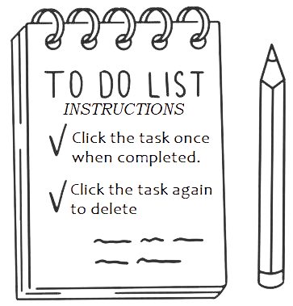

Prioritorized To-Do List:
Helps you stay organised

To-Do List Instructions
Click the task once to complete the task
Click the task again to delete it
TO-DO LIST
Task Details:
Select Priority
Low
Medium
High
Save task
TASKS
Low
Medium
High
All